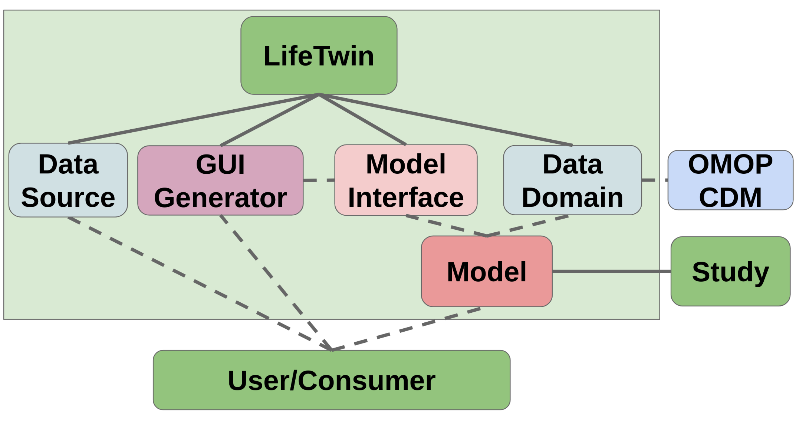

Welcome to LifeTwin’s documentation!
We introduce LifeTwin, a python framework for simulation of individual and population medical digital twins. LifeTwin defines a common development layer for medical digital twins that allows the easy incorporation of new medical models with a common data layer.
The concept of Digital Twin was conceived to serve as the foundational concept for Product Lifecycle Management. The underlying idea being that the digital entity would accompany the physical entity’s lifecycle - from its creation to its destruction. This digital twin would get its source of data from the real world and then process it, model it, use it for simulations, and produce useful forecasting and information about the future of such entities.
In healthcare, Digital Twin technology aligns with the shift toward personalized medical care, and it’s expected to become particularly relevant given the aging global population and the prevalence of chronic diseases. Digital Twins can predict disease progression, enable personalized treatments, and reduce systemic pressures on healthcare systems and much more. This can have a significant impact on both patients and the healthcare system itself.
In fact, most of the scientific research that we have found to be applicable to identify, prevent and effectively treat diseases do not usually refer to the concept of Digital Twin, and instead just provide basic statistical and machine learning models that can then be used in real-world scenarios based on individual or population data.
The main problems that we have identified in this set of studies can mostly be grouped in:
The lack of a well structured communication interface that allows the simulations to define their data requirements in a compatible and pluggable way. We have defined this problem as the lack of a common data layer.
The lack of an structured project or framework that would allow these statistical models to be easily integrated and tweakable by developers and users. This is, essentially, an implementation problem.
The ability to run structured and well-behaved simulations with an agnostic simulation engine that can work well on both individual patients and a population. That is, a simulation framework.
For all of these reasons, we designed LifeTwin, a framework for modelling medical digital twins that fit these objectives and can scale and be easily used by both end-users and application developers.
In order to tackle the problems defined and achieve a satisfying solution, we have designed LifeTwin according to the following diagram:
The main components of LifeTwin are:
Data Domain definer that allows models to specify their data requirements according to the OMOP Common Data Model
Model Interface that serves as an interoperability entrypoint between the framework and the actual statistical models that can be implemented through inheritance
An automatic local GUI Generator that can automatically adapt itself to any model
A Data Source module to allow Users to run the models with different sets of data.
Contents:
- Examples
- CRC Simulation Graph
- CRC Simulation GUI
- Framingham Parameter Description
- Framingham Simulation Graph
- Framingham GUI Simulation
- Genetic Framingham Simulation Graph
- Advanced Framingham GUI Simulation
- Framingham GUI Simulation with Normal Distribution
- Gail GUI Simulation
- OMOP DB Population Simulation
- OMOP DB Filter Population
- OMOP DB Advanced Language Showcase
- PIM GUI Simulation
- Prostate GUI Simulation
- QRisk Parameter Description
- QRisk Simulation GUI
- Score Simulation GUI
- CLivD Simulation GUI
- Covid Simulation GUI
- LifeTwin Internals